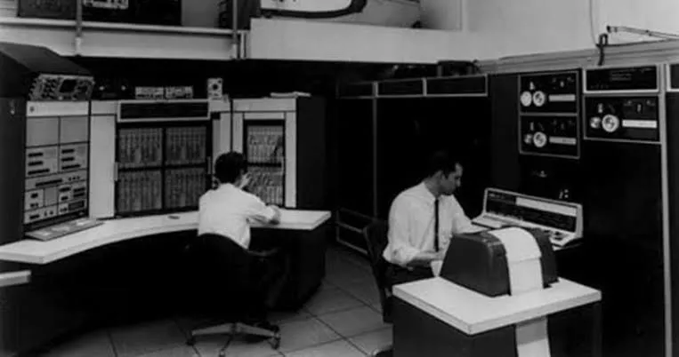
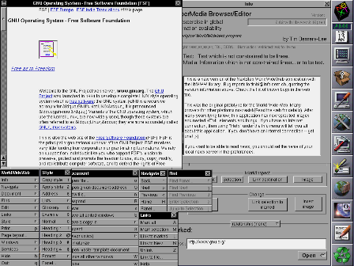
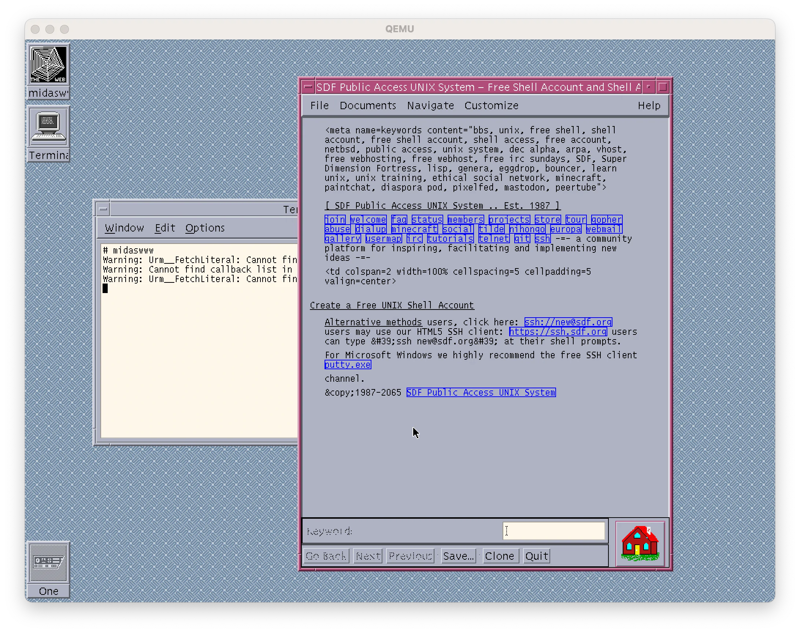
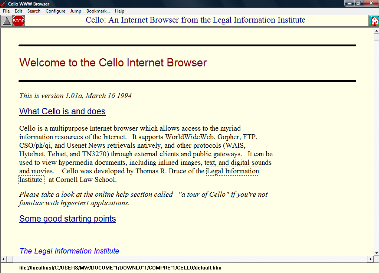
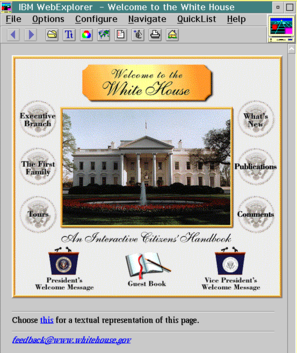
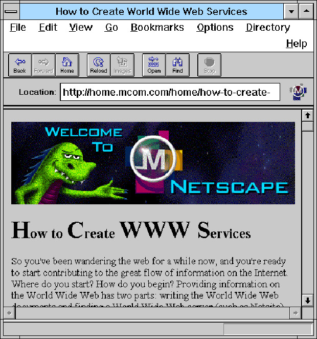
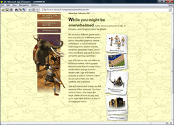
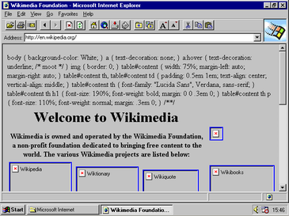

• O QUE É UM BROWSER?[1]
Um browser é um software que mostra e envia informações da World Wide Web.
Com o advento da Internet, o conhecimento gerado por todos os seus usuários ganhou uma nova forma de ser exibida e gerada, ampliou-se o campo da informação. A ferramenta mais popular de visualização de informações disponíveis na internet é o navegador.
Logo o navegador é uma ferramenta que nos auxilia a visualizar e gerar conteúdo na internet.

• TIM BERNERS-LEE[2]
Tim Berners-Lee criou o primeiro navegador, chamado WorldWideWeb, em 1990. Ele ainda o introduziu como ferramenta entre os seus colegas do CERN em Março de 1991. E tem sido intrinsecamente ligado ao desenvolvimento da própria Web.
A Web, entretanto, só explodiu realmente em com a introdução do NCSA Mosaic, que era um navegador gráfico (em oposição a navegadores de modo texto) rodando originalmente no Unix.

• A GUERRA DOS NAVEGADORES[3]
A Netscape lançou o seu produto líder Navigator em outubro de 1994, e este tornou-se o mais popular navegador no ano seguinte.
A Microsoft, que até então havia ignorado a Internet, entrou na briga com o seu Internet
Explorer, comprado apressadamente da Splyglass Inc.
Isso marca o início da Guerra dos navegadores, que foi a luta pelo mercado dessas aplicações entre a
gigante Microsoft e a companhia menor largamente responsável pela popularização da Web, a
Netscape.
O Opera, um navegador rápido e pequeno, popular principalmente em Compu1996 e permanece um produto de nicho no mercado de navegadores para os computadores pessoais (PC).
• A primeira guerra (1995-2001)
- DEZEMBRO DE 1994:
O Netscape Navigator é lançado, com o objetivo de substituir as poucas opções de navegadores (como o Mosaic, que possuía poucas funcionalidades)
- 1995:
A Microsoft lança o seu Microsoft Internet Explorer. Primordialmente lançado como um complemento do Plus! do Windows 95 no mesmo ano.
- Posteriormente:
O Netscepe acabou ficando para trás, visto o rápido avanço do Internet Explorer.
| Década | Navegador | Ano | Criador | Inivações | Interface |
|---|---|---|---|---|---|
| Início da Década de 90 | Nexus | 1990 | Tim Berners-Lee | Primeira interface gráfica |  |
| MidasWWW | 1992 | Tony Johnson | - |  |
|
| Cello | 1993 | Thomas R. Bruce | Primeiro navegador desenvolvido para o Windows (OS) |  |
|
| IBM WebExplorer | 1994 | IBM | Suporte para tabelas em HTML |  |
|
| Netscape | 1994 | Marc Andreessen e Jim Clark | Carregava as páginas mais rapidamente |  |
|
| Final da década de 90 | UdiWWW | 1995 | Bernd Richter | Suporte para HTML 3 |  |
| Internet Explorer | 1995 | Spyglass, Inc. (comprado posteriarmente pela Microsoft) | Vinha nativamente com o Windows |  |
• A segunda guerra (2004-2017)
- 2004:
O Netscape começa a declinar. então foi fornecido ao público o código-fonte do Netscape Navigator. Isso levou à fundação do Mozilla Firefox, um navegador de código aberto e sem fins lucrativos. O Firefox foi crescendo em popularidade ao longo do tempo.
- 2005:
Em 15 de fevereiro de 2005, a Microsoft anunciou que o Internet Explorer 7 estaria disponível para o Windows XP SP2 e versões posteriores do Windows até meados de 2005.
- MARÇO DE 2008:
O Netscepe é encerrado em primeiro de março de 2008, depois de 18 anos de serviço.
- DEZEMBRO DE 2008:
O Google lançou o navegador Chrome para Microsoft Windows em 11 de dezembro de 2008, usando o mesmo mecanismo de renderização do WebKit que o Safari e um mecanismo JavaScript mais rápido chamado V8.
- 2010:
Em 21 de janeiro de 2010, a Mozilla lançou o Mozilla Firefox 3.6, que permite o suporte para um novo tipo de exibição de tema, 'Personas', que permite aos usuários mudar a aparência do Firefox com um único clique. A versão 3.6 também melhorou o desempenho do JavaScript, a capacidade de resposta geral do navegador e os tempos de inicialização.
- 2011:
O Google lançou o Google Chrome 9 em 3 de fevereiro de 2011. Os novos recursos apresentados incluíram suporte para WebGL, Chrome Instant e Chrome Web Store.
- Outros navegadores:
O navegador Opera foi lançado em abril de 1995, mas foi apenas durante a Segunda Guerra dos Navegadores que ganhou notoriedade.
O navegador Safari foi lançado para os dispositivos da Apple Inc. em 23 de junho de 2003.
• A terceria guerra (Atual)[4]
- A ordem cronológica dos fatos da Terceira Guerra dos Navegadores ainda não foi definida, visto que ela
acontece atualmente. Alguns analistas e especialistas do setor tecnológico afirmam que esta edição tem a
Inteligência Artificial presente.